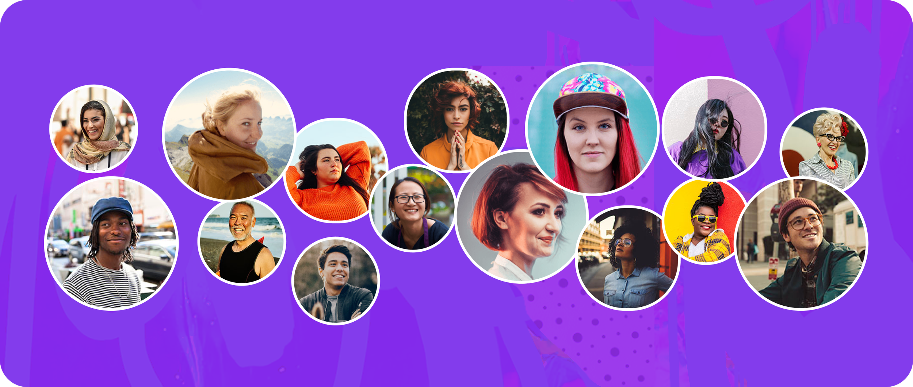

The Premise
At the heart of the Mighty Networks platform lies the idea of "people magic" — a spark that makes members feel seen, appreciated, and authentically connected.
Yet for all the talk about people magic, it's often missing in the small, day-to-day moments of using the product. Part of my role as Director of Design is to constantly look for ways to deliver on the promise of meaningful human connection, rather than just talk about it. In this case study, I collect and explore a rolling list of little moments I've defined over the years.
Idea #1A Modern Member List
We already have a "people explorer," but simply showing faces doesn't automatically spark connection. I refreshed this feature by reducing clutter and organizing members into smaller, more intentional groups. Tapping on a face reveals a modern profile with a mini bio about the person, and a selection of quick, low-barrier actions.
These small, targeted interactions invite people to connect over shared interests or experiences, rather than leaving them to guess how or why they should reach out. Over time, we aim to introduce a "meet others like this person" feature to keep that thread of connection strong, helping members naturally build their network.
Idea #2Say Thanks for Recognitions
A recognition should be effortless and feel fantastic — both for the giver and the receiver. But writing a full message of thanks can be intimidating, especially when the space feels blank and formal. To solve this, I envision a frictionless way to react in-chat or send a quick AI-suggested message, preserving the good vibes of getting recognized without burdening users with the dreaded "blank page" problem.
This design also taps into shared values and familiar faces — small moments that make gratitude feel magical and keep the momentum going.
Ideas #3, #4, #5, #6…On Their Way 😉
Finding these magical moments in a product experience is the never ending work of a designer — they're the kinds of things that keep me up in the middle of the night. Keep checking back here to see what new ideas are on my mind lately!